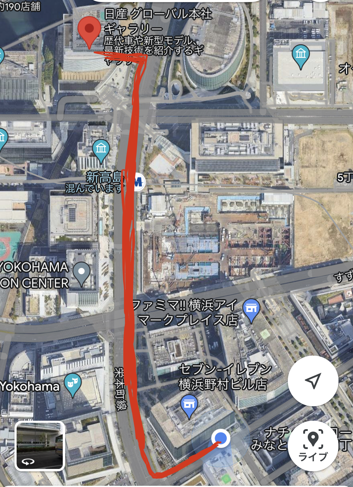

＜調査概要＞
＜場所＞神奈川大学から日産グローバル本社ギャラリー入り口まで
＜日程＞10月17日（火） 13:45〜13:55

＜調査内容＞
一番上に着ているトップス（種類＆素材）
＜調査結果＞
＜調査から分かったこと＞
・定点観察の時と同じく会社員の方が多かったためジャケットの人が多かった。
➡︎（移動している人は体温調節のことを考えて、脱ぎ着しやすい服の人が多いのでは？）
・同じ気温だが、女性の方が厚着している人が多かった。（体温が女性の方が低い？）
➡︎調べると、一般的に男性は暑がりで、女性は寒がり。 男女の体感温度は３～５度もの差があるといわれてるそう。
参考文献男女の体感温度の違いはなんと○○度！
＜まとめ＞
・移動観察、定点観察を通して男女の服装の違いだけでなく、外国人の方や小さい子供の服装まで観察することができ、体温の違いなど今回の観察から、より実感することができた。
・移動観察、定点観察の場所を近くにしたことで無駄なく観察することができ、また事前に表を作ってから観察場所に行ったのでスムーズに観察することができた。